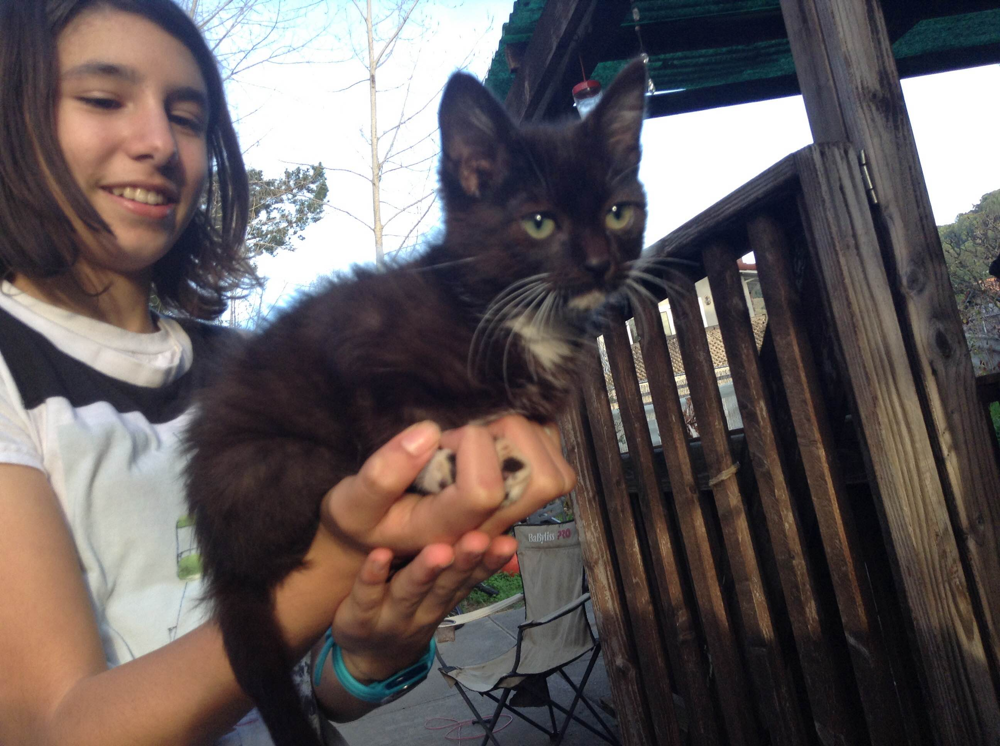

Lab 9 - Libraries and JQuery
Challenge
Experiment with JQuery, have fun with CSS and make buttons that do things.
Problems
I had a lot of fun with the CSS in this lab. I used the website Coolor.co to find nice color palettes. I struggled to figure out to make a button do something, and then I made a button that changed the background color but that was the wrong button function for the lab. And then I struggled to make a button toggle a Class.
Results
The results are right down below.
Output
This is my special class for going crazy in CSS. I experimented by scrolling through the different prompted options and seeing what worked. So far, CSS is my favorite thing I've learned in this class. Here is my cat and I when we were a lot younger, she is a kitten and I am fourteen in this picture. 